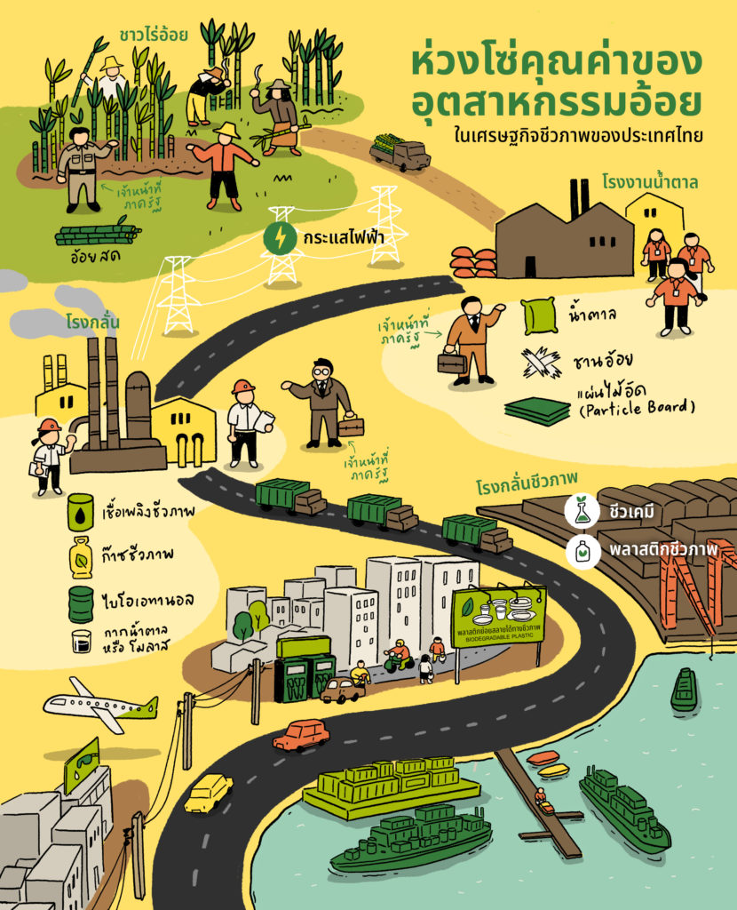

เศรษฐกิจชีวภาพ |
|---|
Bio economy หรือเศรษฐกิจชีวภาพ คือการใช้ทรัพยากรชีวภาพต่างๆ ไม่ว่าจะเป็น พืช สัตว์ หรือสิ่งมีชีวิตอื่นๆ รวมทั้งผลิตภัณฑ์ต่างๆ ในการค้นพบสารสำคัญใหม่แต่อาศัยวิธีการอย่างเป็นระบบ เช่น เริ่มต้นจากการสร้างคลังสิ่งมีชีวิตที่เรียกว่า National biobank จากนั้นจึงใช้ความรู้สมัยใหม่ เช่น ความรู้เกี่ยวกับสารพันธุกรรมที่เรียกว่า genomics และกระบวนการควบคุมการสร้างและค้นหาสารออกฤทธิ์สำคัญ ซึ่งเรียกว่า Functional ingredients โดยใช้กระบวนการที่มีประสิทธิภาพสูงแบบรวดเร็ว ที่เรียกว่าระบบ High throughput screening และเพิ่มปริมาณผลิตภัณฑ์ด้วยเทคโนโลยี Plant Factory หรือ Cell Factory ที่ควบคุมปัจจัยแวดล้อมทุกอย่างจนได้ผลผลิตสูง สุดท้ายเมื่อได้ functional ingredients มาแล้วเรายังมีเทคโนโลยีที่ใช้ปรับปรุง เปลี่ยนแปลงหรือเพิ่มการออกฤทธิ์ของสารที่ได้รวมทั้งทดสอบมาตรฐานและควบคุมการผลิตทุกขั้นตอนสร้างมูลค่าเพิ่มจากทรัพยากร |
|  |